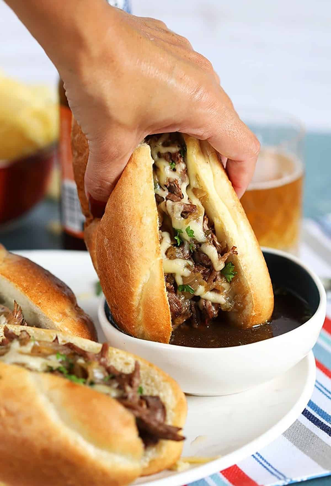

Home
Easy french Sandwinch

Description
A French dip sandwich, also known as a beef dip, is a hot sandwich consisting of thinly sliced roast beef (or occasionally other meats) on a French roll or baguette, served with a side of savory au jus (beef broth or consommé) for dipping
Ingredients
- 4 hoagie rolls, split lenghtwise
- 1 (10.5-ounce) can beef consommé
- 1 cup of water
- 1 pound thinly sliced deli roast beef
- 8 slices provolone cheese
Steps
- Preheat the oven to 350 degrees F (175 degrees C).
- Open hoagie rolls and lay them out on a baking sheet.
- Heat beef consommé and water in a medium saucepan over medium-high heat to make a rich beef broth.
- Place roast beef in broth and warm for 3 minutes.
- Arrange meat on hoagie rolls and top each roll with 2 slices of provolone.
- Bake sandwiches in the preheated oven until cheese melts, about 5 minutes
- Serve sandwiches with small bowls of warm broth for dipping.